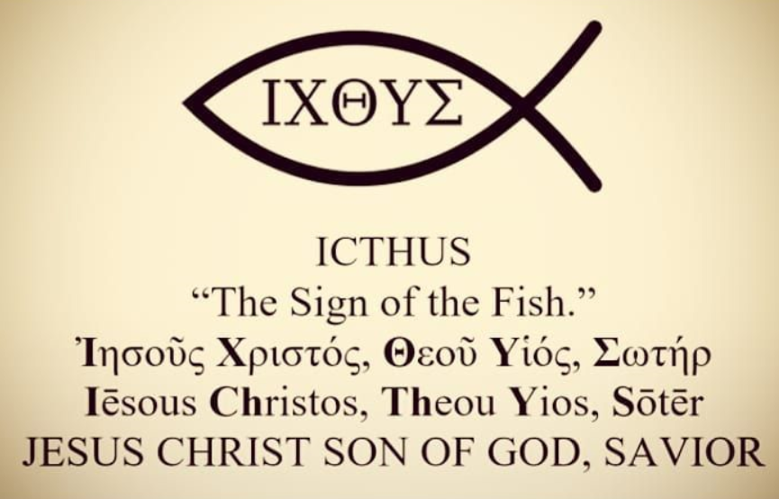
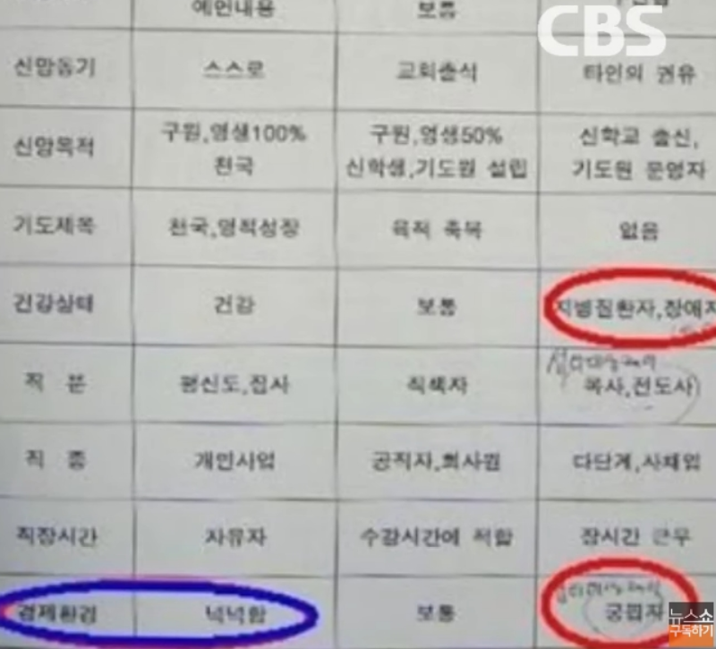
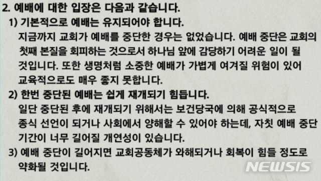
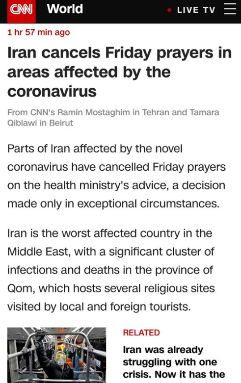

신천지가 비난 받는 이유와 물고기 표시(Ichthys)
게시: 2020-02-29T13:23:56+09:00
요즘 신천지라는 기독교 계열 이단 종교에 대한 사회적 분노가 거셉니다. 10여 년 전부터 개신교에서는 이 신천지라는 이단에 대해서 엄청난 골머리를 앓고 있었습니다. 제가 다니던 교회에서도 1층 공지란에 가장 크게 붙여놓은 것이 신천지에 대한 경고였습니다.
(제가 다니던 교회 공지란에도 이런 그림과 함께 신천지에 대한 경고문이 붙어있었습니다.) 이번 사태가 벌어지면서, 누가 신천지 신도 수가 몇천 명 정도냐고 묻길래 몇십만 명 수준일 것이라고 답했습니다. 실은 저도 그 숫자는 잘 몰랐습니다. 그냥 생각에, 몇천 명 수준이면 그 종교가 그렇게 유명하지 않을 것이고, 몇백만 명 수준이면 감히 이단이라고 부르지 못할테니, 아마 수십만 명 수준일 거라고 생각했습니다. 실제로는 25만 명 정도 된다고 하더군요. 사실 기독교 신자가 아니라면 신천지든 뭐든 기독교 계열 이단에 대해서는 별 관심이 없었을 것입니다. 그러나 이번 코로나-19 사태로 인해 신천지=전염병이라는 씻지 못할 오명이 각인되었으므로 신천지라는 이단의 성장은 큰 타격을 받았습니다. 기독교, 특히 개신교 입장에서는 불행 중에서 그나마 좋은 소식이라고도 할 수 있습니다.
(신천지 박멸 절호의 찬스에 개신교 측에서는 이 분이 등장하셔서 갑분싸)
제 생각입니다만, 그럼에도 불구하고 기존 신천지 신도들은 이번 기회에 신천지에 대한 환상을 버리고 탈출하지 않고 오히려 더 굳게 단결할 것 같습니다. 자신들은 억울한 피해자이고, 기존 기독교 교단에서 자신들에게 부당한 혐오와 증오를 조장하며 탄압하고 있다고 여길 것이기 때문입니다.
(아마 지금 신천지 신도들은 로마에 고의로 화재를 일으켰다는 누명을 쓰고 콜로세움에 끌려나와 사자밥이 되면서도 믿음을 굽히지 않았던 초대 기독교인들과 자신을 동일시하고 있지 않을까요 ?)
저는 신천지가 무슨 교리를 가르치는지 한번도 들어본 적이 없어서 모릅니다. 제 직장 동료분 중에 독실한 개신교 신자가 있어서 최근 물어보았습니다. Q) 신천지에서는 주로 뭘 가르치길래 이단이라고 하나요 ? A) 걔들은 요한계시록에 굉장히 집착하는데, 거기 나오는 14만4천명이라는 숫자에 큰 의미를 부여하면서 그 숫자의 신자들만 구원을 받을 수 있다고 가르쳐요. --> 사실 개신교도 교회 안나오면 모두 지옥간다고 가르칩니다. Q) 그거 말고는 이단이라고 할 만한 것이 없나요 ? A) 일단 신자가 되면 포교를 해서 새 신자를 데려오라고 조직적으로 움직여요. --> 사실 개신교에서도 새신자 선교를 굉장히 중시합니다. 조직적으로 조를 짜서 길거리에서 선교 활동을 하기도 하고, 전세계 방방곡곡에 선교사를 보냅니다. Q) 그 외에는 없어요 ? A) 교회에 돈을 바치라고 부추겨요. --> 교회마다 정도의 차이는 있지만 그건 개신교도 마찬가지에요. 좀 심한 경우로, 전에 제가 다니던 대형 교회에서는 목사님이 건축 헌금을 장려하면서 일요예배 때 어떤 가정의 주부가 제출한 편지를 감동적인 음악과 함께 읽어주시는데, 내용은 '전세금으로 모았던 돈을 모두 하나님께 바친다'는 내용이었습니다. 굉장히 놀랐습니다. 그 외에도 집 판 돈을 모두 헌금으로 내서 가정 분란이 일어나는 사례를 종종 들었습니다. Q) 걔들은 교주 이만희가 재림 예수라고 주장하나요 ? A) 적어도 대외적으로는 그런 소리를 안 하는데, 아주 핵심층으로 올라가면 결국 '사실 이만희가 재림 예수'라고 가르친대요. --> 신천지에서 그렇게 주장하는지 여부는 모르겠으나, 과거 로마 시절, 언젠가 하나남이 내려보내주시는 구세주가 내려와 로마를 무찌르고 유대민족을 구원해주실 거라고 믿고 있던 유대인들에게는 어느날 과거가 베일에 싸인 산골마을 출신이자 배운 것도 없는 막노동자 출신의 예수라는 사람이 나타나서 '내가 신의 아들이자 너희들의 구세주'라고 주장했을 때도 유대인들은 아마 비슷하게 여기지 않았을까 하긴 합니다. Q) 솔직히 여태까지는 개신교와 큰 차이가 없어보이는데... A) 걔들은 은밀하게 움직이고 세뇌가 될 때까지 정체를 밝히지 않아요. --> 지금은 아닙니다만, 로마시대에는 기독교도 비슷하게 행동했습니다. Ichtys라는 물고기 그림도 초기 기독교인들끼리 로마의 탄압을 피해 서로를 알아보는 비밀 신호였지요.

(Ichtys 입니다. 영어식으로는 익씨스 헬라어로는 익투스라고 읽습니다.)
왜 하필 물고기가 기독교의 상징이 되었느냐 하면 예수님의 오병이어 기적도 있고 베드로를 포함한 12사도의 상당수가 어부 출신인 것도 있습니다만, 다음과 같이 '예수 그리스도, 하나남의 아들, 구세주'라는 구절의 머리글자들을 모으면 Ichtys가 되는데, 당시 사용되던 헬라어(그리스어)에서 비슷하게 발음되는 ikhthýs 라는 단어가 바로 물고기라는 뜻이었기 때문입니다. Iēsous (Ἰησοῦς) 예수 (Jesus) Christos (Χριστός) 기름부음 받은 (anointed) Theou (Θεοῦ) 하나님의 (God's) yios (Yἱός) 아들 (Son) sōtēr (Σωτήρ) 구세주 (Savior) 저는 신천지와 정통 기독교의 결정적인 차이는 바로 소수의 이익을 추구하는 집단이냐 인류에 대한 사랑을 가르치는 집단이냐의 차이라고 봅니다. 신천지의 근본적인 구조는 14만4천명 안에 들어가야 구원을 받는다는 신도들끼리의 경쟁 체제입니다. 그렇게 소수 정예로 유지되면 교주가 얻는 경제적 이익이 제한되니까, 전도를 많이 해야 경쟁에서 순위가 올라간다는 식으로 전도를 부추기겠지요. 이번에 신천지가 국민적 혐오 대상이 된 이유는 위에 나열된 이유들 때문이 아닙니다. 전염병을 퍼뜨리게 된다는 것을 알면서도, 자신은 14만4천명 안에 들어가기 위해 수요예배에 참석해야 한다면서 증상이 있음에도 병원을 빠져나가 종교 모임에 참석하고, 이 난리가 벌어진 속에서도 교단의 이익을 위해서 다른 교회에 심어놓은 추수꾼들의 정체를 밝히지 않기 때문입니다. 이건 다른 사람들에게 무슨 피해가 있건 말건 자신이 다른 경쟁자를 누르고 14만4천명 안에 들어가야 하고, 자기 교단의 세력 확장이 더 중요하다는 생각을 보여주는 행동입니다.
와이프가 뉴스를 보다 한마디 하더군요. "신천지 교인은 하나 같이 다 버젓한 직업을 가진 사람들이더라... 간호사, 경찰 등등" 사실 그 이유가 신천지가 사랑의 종교가 아니라는 것을 가장 잘 보여줍니다. 그들은 가난하고 못 배우신 분들에게는 전도를 하지 않습니다. 돈이 안 되니까요. 예수님은 부자와 권세있는 자들도 멀리 하지 않으셨지만, 가난한 자와 멸시받는 자들을 주로 가까이 하셨습니다.

그에 비해 정통 기독교는 예수님의 가르침을 따릅니다. 저는 성경을 한 단어로 요약하면 바로 '사랑'이라고 생각합니다. 그건 예수님의 말씀에서도 명백하게 드러납니다. 요한복음 13장 34절 새 계명을 너희에게 주노니 서로 사랑하라 내가 너희를 사랑한것 같이 너희도 서로 사랑하라 예수님께서는 '혈통적인 선민 의식'에 사로잡혀 과거의 율법을 잘 지키는 자신들만 구원받을 수 있다는 유대교인들의 믿음에 반하는 사랑의 가르침을 펼치셨습니다. 그리고 그 결과로 유대교인들에게 미움을 받으셨습니다. 기독교에서 율법은 절대적이지 않습니다. 예수님께서는 바리새인들에게 '그거 율법을 어기는 것 아니냐'라는 공격을 수없이 당하시면서도 당장의 괴로워하는 사람들의 고통을 덜어주는 것에 집중하셨습니다. 그런 의미에서, 카톨릭이 전국적으로 모든 미사를 2주간 취소하고 가정미사 및 대송으로 대체하는 것이나, 소망교회 순복음교회 등에서 일요 예배를 온라인 예배로 대체한 것은 진실로 예수님의 가르침을 실천하는 것이라고 생각합니다. 그러나 아직도 일부 개신교 교회들은 아래와 같은 핑계를 대면서 일요 예배를 위해 교회에 모이라고 부추깁니다. 어지간한 규모의 교회치고 신천지 추수꾼이 없는 교회는 없습니다. 그렇게 좁고 밀폐된 교회에 모여 침을 튀기며 찬송가를 부르면 코로나-19가 더 쉽게 확산될 수 밖에 없습니다.

(신천지가 이런 핑계를 대고 계속 종교 회합을 가진다고 하면 납득이 되시겠습니까 ?)

(심지어 이란조차, 국민이 투표로 선출한 대통령보다 종교 지도자인 이맘의 권한이 더 높은 이란조차, 기독교의 일요 예배에 해당하는 금요 기도를 취소했습니다.) 그런 상황 속에서도, 온라인 예배와 가정 예배라는 훌륭한 대안이 있음에도 꼭 일요 예배를 고집하는 속사정은 여러분도 짐작하실테니 여기서는 적지 않겠습니다. 참된 기독교인이라면 다음의 성경 구절을 읽어보시고 어떤 것이 참된 기독교인으로 해야 할 일인지 생각해보시기 바랍니다. 저는 개인적으로 목사님들이 뭐라고 하던 적어도 2주간은 교회에 나가지 말고 댁에서 온라인 예배 혹은 가정 예배를 드리시기를 부탁드랍니다. 마태복음 6장 5~6절 또 너희가 기도할 때에 외식하는 자와 같이 되지 말라 저희는 사람에게 보이려고 회당과 큰 거리 어귀에 서서 기도하기를 좋아하느니라 내가 진실로 너희에게 이르노니 저희는 자기 상을 이미 받았느니라 너는 기도할 때에 네 골방에 들어가 문을 닫고 은밀한 중에 계신 네 아버지께 기도하라 은밀한 중에 보시는 네 아버지께서 갚으시리라